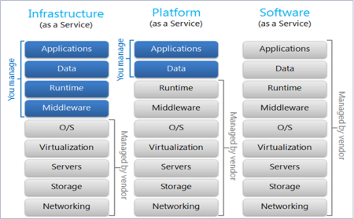

Healthcare Data Analytics
Tom Fish | Alex Jantz
Data Integration Case Studies
The Good! (Good?)

Data Integration
“Data integration is the combination of technical and business processes used to combine data from disparate sources into meaningful and valuable information. A complete data integration solution encompasses discovery, cleansing, monitoring, transforming and delivery of data from a variety of sources.”
- IBM
Data Integration

True Data Integration is agnostic of source or target application
ETL is a bridge for bi-directional flow
History

Where we are
- Cloud popularity exploding
- “Distributed systems” now routinely global
- “Integration” is area of least satisfaction for cloud users
- Three entirely new scenarios:
- Ground to cloud
- Cloud to cloud
- Cloud to ground
Cloud Delivery Models

SaaS
(Software as a Service)
- Examples
- Salesforce
- Office 365
- Google Apps
PaaS
(Platform as a Service)
- Application framework
- Ability to Scale
- Examples
- Azure
- Cloud Foundry
- Google App Engine
IaaS
(Infrastructure as a Service)
- Security
- Updates
- Examples
Cloud (still) Needs
- Data aggregation
- Data replication
- Single source of truth
- Shared business functions
- Distributed, long-running business processes
- Business partner integration
- Integration software!
New Considerations
- Network Latency
- Identity Management
- Different SLAs
- Data Security
- Monitoring
- Management
- Interoperability
- Changing Schemas
- Services not Servers
- Connectivity
- REST-first
"Applications created in 2012 using traditional architecture models will be an IT-constraining legacy by 2016
The leading business applications of 2016 are designed today using Nexus-enabled application architecture principles"
- Gartner
Integration Patterns
- Remote Procedure Call
- Asynchronous messaging
- Shared database
- File transfer
The need for timely information

What is real-time integration?

Traditional Integration

Traditional Integration: Result...

Considerations
- Complexity of source and targets.
- Data formats.
- Level of quality.
- Availability of source/target interfaces.
- Volume, velocity; and variety.
- Delivery requirements.
- Real-time, near real-time, batch/scheduled.
- Loose coupling/reusability.
- Performance/Availability.
Real-Time Data Integration Patterns
- Transactional Data Processing
- Data Integration Hub (DIH)
- Event Driven Architecture (EDA)
Transactional Data Processing

Transactional Data Processing

Data Integration Hub

Data Integration Hub

Event Driven Architecture

Intro to Master Data Management
Know Your Data
And Know Who Produces it and Who Uses It
And What It Looks Like
And How Much There Is
Decide On a Master Data Strategy
Define The Master Model
Determine Governance
Implementation
Tools and Infrastructure
- Repository
- ETL
- Modifications to Consumer Apps
Dell Boomi
An Integration Platform as a Service (IPaaS) Example
Implementation
An Integration Platform as a Service (IPaaS) Example